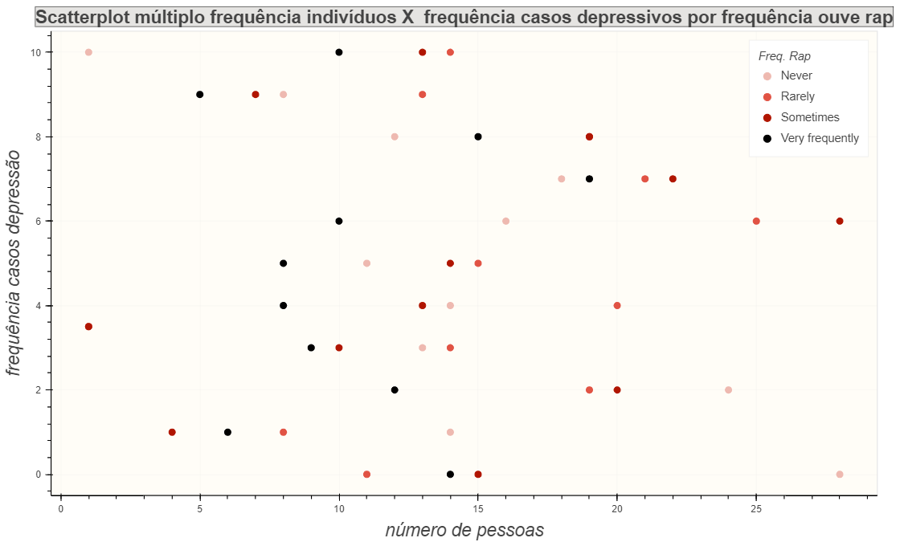

Dado que o servidor online falhou, montei essa página simples em html para apresentar os gráficos em png.
As imagens necessárias para a página html funcionar estão disponíveis no github.
Os gráficos em si:
Linechart simples
Abaixo vê-se um gráfico linechart simples utilizado para plotar duas variáveis quantitativas:
o BPM das músicas e a frequência que eles ocorrem. Assim, pode-se observar qual a distribuição de BPMs
mais comuns.
Scatterplot simples
Aqui vê-se abaixo um scatterplot simples utilizando novamente duas variáveis quantitativas:
a idade e a quantidade de horas de músicas ouvidas no dia, para evidêniar se há alguma correlação
entre as duas variáveis.
Gráfico de barras horizontal
Neste vê-se um gráfico de barras para uma variável quantitativa, os estilos de música, e outra
variável quantitativa, a frequência de cada categoria.
Linechart empilhado
Neste outro pode-se observar um linechart simples para cada categoria da variável frequência
ouve metal, formando um linechart empilhado. Para cada categoria mediu-se a frequência absoluta de pessoas
com casos de insônia e a frequência que eles ocorrêm (varia entre 0 e 10).
Scatterplot empilhado
Neste outro, vê-se um scatterplot para cada categoria. O scatterplot se deve porque para cada
categoria estamos analisando duas variáveis quantivativas: a frequência absoluta de pessoas e a frequência
de vezes que elas presenciam casos depressivos (varia entre 0 e 10).

Histograma empilhado
Este gráfico ao lado apresenta histogramas empilhados para representar a distribuição de idade.
Para cada categoria mediu-se a idade e a frequência com que aparece para se fazer os histogramas.
Heatmap cores
Este gráfico apresenta um heatmap feito com cores para as categorias frequência ouve
metal e frequência ouve música clássica. Cada cor representa uma frequência de pessoas anotada na legenda,
que, pela interatividade do bokeh, poderia ser posta em cima de cada cor para ver o número de pessoas que a
cor representa.
Heatmap transparência
Similar ao gráfico acima, este heatmap, embora se baseie na mesma ideia, se utiliza para tal não as cores, mas as diferentes
intensidades de transparência de uma cor específica. Cada casa representa um número indicado em conjunto.
Gráfico categórico de tamanho
Por fim, um gráfico categórico que associa cada entrada a um tamanho. Como área não é uma boa medida em questão de precisão,
pensei ser prudente colocar os números indicando o valor de cada entrada em conjunto.